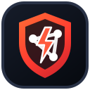

APKPrivate source
ANDROID PRODUCT
DOBERTO APK
Web-to-APK platform for transforming websites into configurable Android applications, with authentication, project history, build workflows and native Android tooling.
Live platforms I design, build, deploy and continue improving.
Visual snapshots from selected products and case studies.
Two app-focused projects from my private workspace. These are products and tools, not public websites.
Web-to-APK platform for transforming websites into configurable Android applications, with authentication, project history, build workflows and native Android tooling.
Media utility product with Android support for downloading compatible YouTube, TikTok, Facebook and Instagram media through protected server-side workflows.
Self-hosted bot hosting storefront and dashboard with Pterodactyl provisioning, client controls and protected backend infrastructure.

Gaming proxy dashboard with Google sign-in, first-login registration, protected access and server status tools.
Multi-session WhatsApp automation bot with pairing, session management and practical command workflows.
Streaming platform for films, series and Live TV with a mobile-first experience.
Marketplace for Haiti with listings, discovery, messaging and responsive buying and selling flows.
Multi-device automation platform with pairing, sessions, commands and practical bot workflows.
Contact utility platform built around VCF workflows, WhatsApp communities and visibility tools.